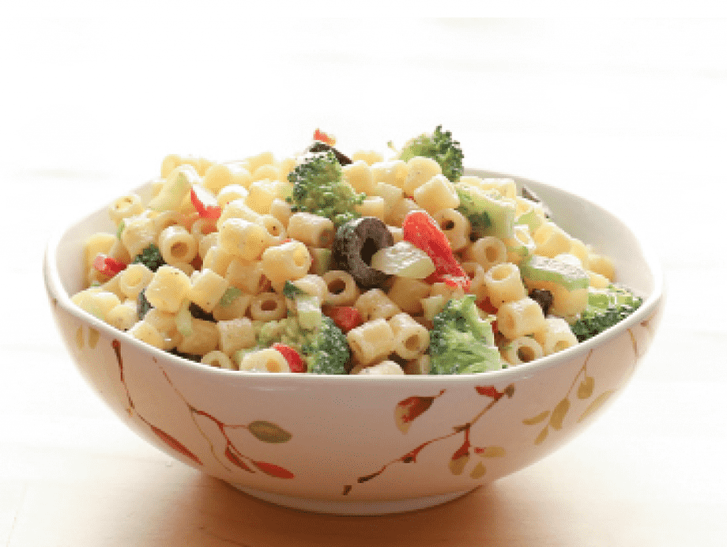

Pasta Salad

Description
This pasta salad recipe was given to me by a dear friend many years ago, and I've been making it ever since! It's great for barbecues.
Ingredients
-
Pasta: This colorful, top-rated pasta salad starts with one pound of tri-colored spiral pasta.
-
Dressing: Use a bottle of store-bought Italian-style dressing or, if you want to go the extra mile, make your own at home.
-
Seasoning mix: Salad seasoning mix lends tons of savory flavor.
-
Vegetables: You’ll need cherry tomatoes, three bell peppers (green, yellow, and red), and a can of black olives.
Steps
-
Gather all ingredients.
-
Bring a large pot of lightly salted water to a boil. Cook pasta in the boiling water, stirring occasionally, until tender yet firm to the bite, about 10 to 12 minutes; rinse under cold water and drain.
-
Whisk Italian dressing and salad spice mix together until smooth. Combine pasta, tomatoes, bell peppers, and olives in a salad bowl.
-
Pour dressing over salad and toss to coat.
-
Refrigerate salad, 8 hours to overnight.